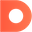

<div class="layout-container">
  <mat-sidenav-container class="layout-sidenav-container"
                         [style.marginTop.px]="mobileQuery.matches ? 56 : 64">

    <mat-sidenav #leftSidenav
                 [mode]="'over'"
                 [opened]="false"
                 [fixedInViewport]="true"
                 class="left-sidenav">
      <mat-nav-list>
        <a mat-list-item
           routerLink="/"
           routerLinkActive="active-link"
           [routerLinkActiveOptions]="{exact: true}">
          <mat-icon matListIcon>home</mat-icon>Home
        </a>
        <a mat-list-item
           routerLink="/about"
           routerLinkActive="active-link">
          <mat-icon matListIcon>contact_page</mat-icon>About
        </a>
      </mat-nav-list>
      <div class="builtwith">
        <div style="font-size: 21px;font-weight: 500;">Built with</div>
        <div style="margin-top: 20px;">
          <a href="https://angular.io/"
             target="_blank">
            
          </a>
          <a href="https://material.angular.io/"
             target="_blank">
            
          </a>
          <a href="https://scully.io/"
             target="_blank">
            
          </a>
          <a href="https://www.datocms.com/"
             target="_blank">
            
          </a>
        </div>
      </div>
    </mat-sidenav>

    <mat-sidenav-content>
      <router-outlet></router-outlet>
    </mat-sidenav-content>

  </mat-sidenav-container>
</div>